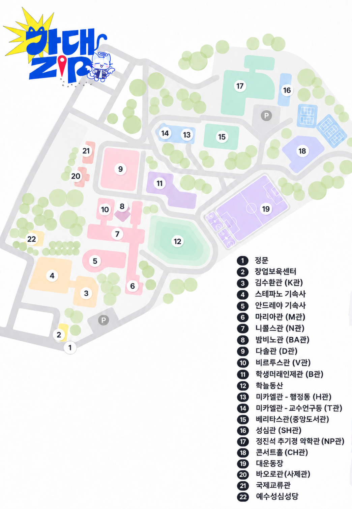

CATHOLIC UNIVERSITY CAMPUS GUIDE
우리 학교, 한눈에 ZIP!
CAMPUS MAP
✦
INTERACTIVE GUIDE
찾고 싶은 건물,
지도에서 바로 클릭!
건물 번호를 선택하면 건물 정보와 층별 도면을 확인할 수 있어요.
01 / CAMPUS
캠퍼스 전체 지도

BUILDING INFORMATION
건물명
×
FLOOR GUIDE
층별 도면
층별 도면 안내
도면 이미지
−
100%
＋
↗
▦
층별 도면 준비 중
해당 층의 도면이 등록되면
이곳에서 바로 확인하실 수 있습니다.
도면 이미지 임시 미리보기
＋
선택한 파일은 현재 브라우저에서만 표시되며 저장되지 않습니다.
도면을 확대하거나 새 탭에서 확인할 수 있습니다. 실제 시설 이용 정보는 학교 안내를 확인해 주세요.